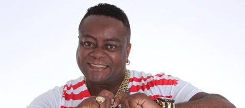
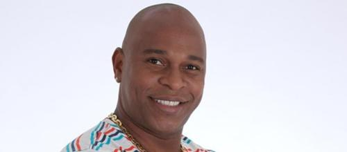

Integrantes
Anderson Leonardo
Criador do grupo e melhor vocalista vivo, recentemente passou por um tratamento onde concertou os dentes.
Andrezinho
Recentemente fez as pazes com Anderson em um reencontro emocionante proporcionado pela rede Record.
Marquinhos Pato
Tem milhares de fãs no Brasil e no mundo e possui o melhor fã clube já produzido na terra.
Lucio Nascimento

Hoje está foragido e é procurado pela polícia.
Jimmy Batera

Recentemente, atingiu os fãs com uma baqueta jogada ao final do show.
Claumirzinho
Com um nome de deixar qualquer um apaixonado, Claumirzinho Encanta fãs do Brasil todo.
Robson